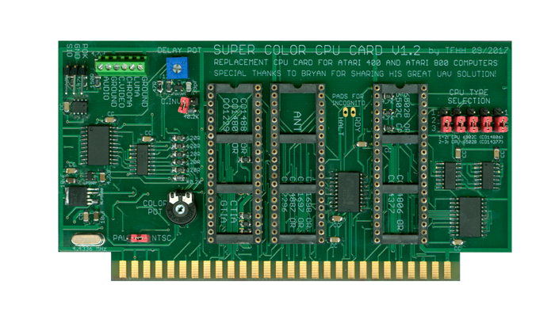
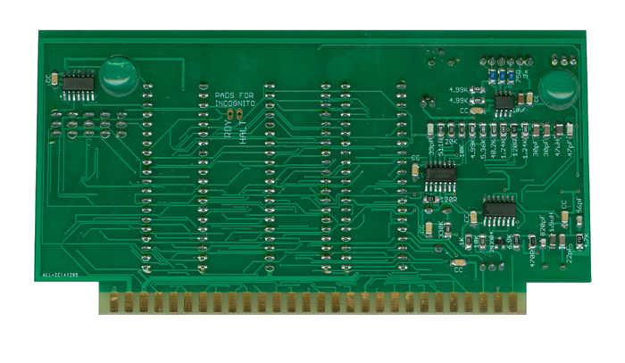

|


Super Color CPU Installation Manual
|

Super Color CPU board -
Front

Super Color CPU board -
Back
| The Super Color CPU board is
a really nicely designed CPU board replacement for the Atari
400/800 computers. It greatly improves the video
output on both systems and it very conveniently provides the
ability to configure to match all variations of the 6502 CPU
from the standard 6502B to the Atari "SALLY" 6502C. It
also supports both NTSC and PAL settings as well. it
has connections for the "Incognito" 800 OS Board lines.
This was a very well thought out design and it a must have
addition to anyone's Atari 400/800 computer. |
Content to
be added, updated 3/25/2019 |